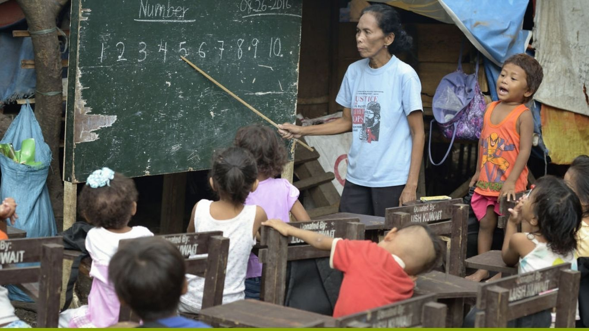

Issue to Address
EDUCATE EVERY CHILD
Poverty and Its Impact on Student’s Education
Poverty is one the problems facing by many country around the world, countries like philippines, poverty leads to many difficulties from health problems to a shortage of essential supplies at home, aggravated by their parents' work pressures and because of this many children faces challenge of instead getting learn from school to try to find a way to eat everyday or getting money. According to the research made by National Association of Secondary School Principals (NASSP), nearly one-fifth of students nationwide are either living in poverty, attending a high-poverty school, or both. Poverty negatively impacts students in a variety of ways within K–12 education and beyond.
Poverty leads also to the filipino children being slow academically because poverty made them wake early to reality that learning is second option than make a money for the day to survive everyday. According to World bank (2021) most countries around the world, Learning Poverty is higher for boys than for girls in Philippines. This result is a composition of two eects. First, the share of out-of-school children is higher for boys (5%) than for girls (4.1%). Second, boys are less likely to achieve minimum prociency at the end of primary school (91.7%) than girls (89.2%) in Philippines.
Support us by donating
Featured Resources
By National Association of Secondary School Principals
Poverty and Its Impact on student education. (2020). National Association of Secondary School Principals
Learn more